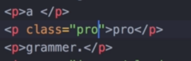
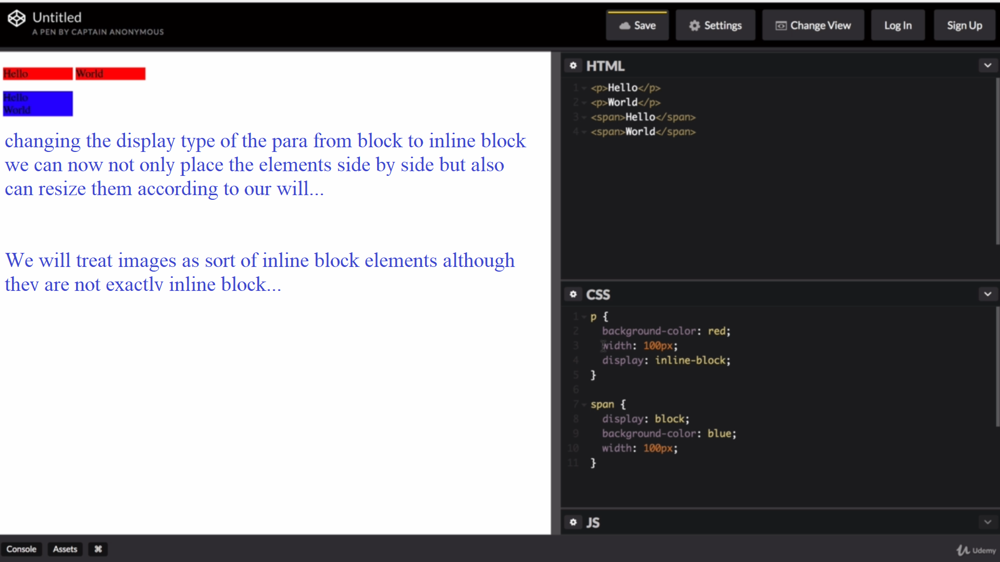
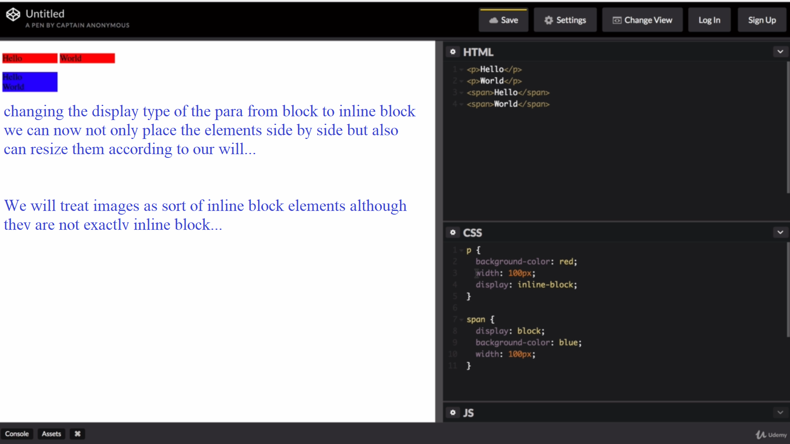
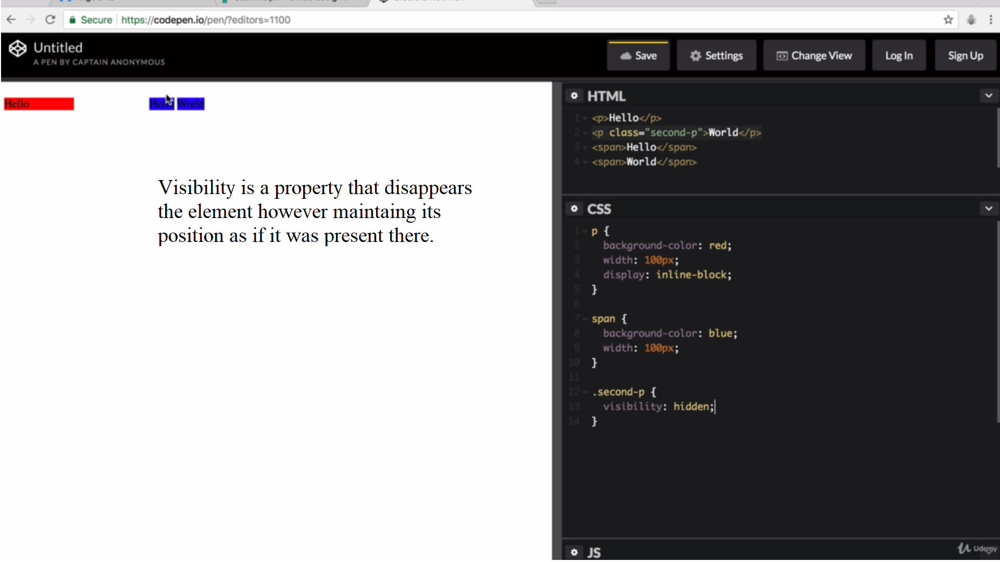
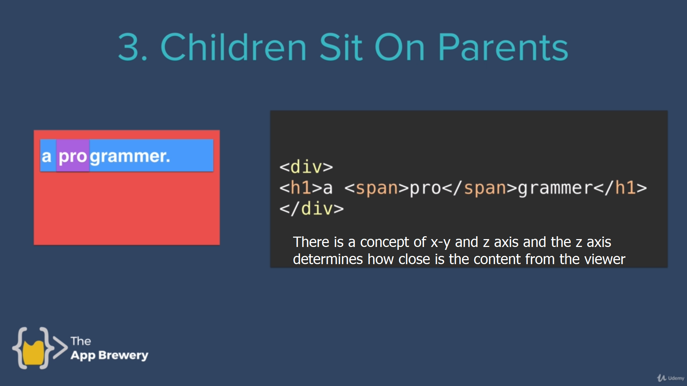
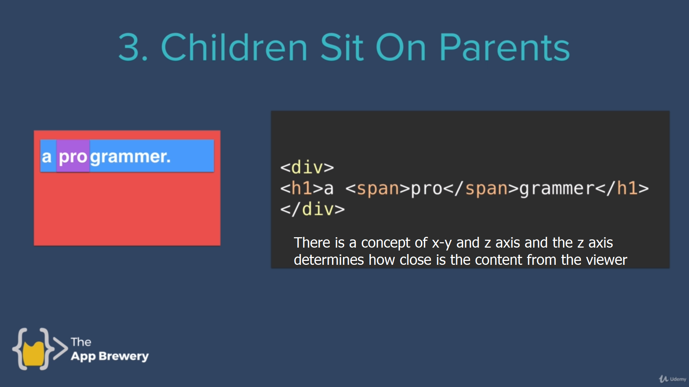

| Incline CSS: | For individual tag we write the css part in the desired tag |
| Heading part CSS: | For a paricular type of tag if same formatting is to be applied in the webpage then this is used |
hence here we use External CSS, one
for example if we have a lot many tags and we want to make changes for all the tags we can do it using the style tag in the head of the html
In order to create dotted line we have two options as follows: border-style = dotted none none(for top bottom and side) border style =none border style top =dotted...
In order to apply css to all the web pages we use external CSS for that we use link in head of the webpage and point it to desired folder as css file...
we need to link our external css file to our html
The art of debugging
We use google chrome for webdev becoz of the presence of the Developer option which helps to identitfy the problems and errors
When various methods are used to apply formatting to a same element then in order to understand the priority hit the developer option in the chrome and see the priority list
for example inline >> style
hit ctrl + shift + i for developer tools in chrome
.png) ;
;
Making a class in an element is equivalent to naming and ob
Use class to group element that would have similar design as multiple element can have same class name
Although Id and class me appear to be same they are not
As there can be multiple instances of class However there is only one instance of an id
That is
However in real life practice we'll rarely come across the use of ids
firstclass and secondclass are two classes which can be accessed and used individually
There is a concept of Pseudo class when we go to mdn css we'll come across a number of elements but there are some which start with a :
An example of this is a hover class i.e. we can define the style of an element when we hover over it , move our cursor over that element
favicon==fav icon
remember to use chrome developer tools, there are some default CSS applied by browser itself
alot many things can be customized by using padding border margin etc
.png)
.png)
.png)
In order to achieve the following i.e. individually underline pro of the programmer we use???
.png)
if you thought that Making another paragraph inside the paragraph would help you are wrong because paragraph is a block element and hence will make 3 blocks...

There output would be

Therefore in order to achieve what we aspire we will use span element which is an inline element

Now about span and p bascially comparision of block VS inline
.png) 

The forth display type is none which is when applied to an element makes that element get disappeared from the webpage as if it wasn't written
However there is also an other element that is called visibility
.png)
.png) 

.png)
before and after applying the code
.png)
.png)
First of all its imp to understand, "position:relative" ,as creating margin in the side we write the code i.e if we write left:20px a margin of 20 pixel gets created in the left side.
.png)